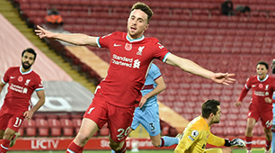
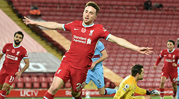
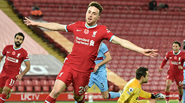

Liverpool players that play upfront with Mane:
- Mohamed Salah
- Roberto Firmino
- Diogo Jota
- Divock Origi
- Takumi Minamino
 

Mané made a sensational start to his Reds career, scoring a stunning solo goal on his debut, a 4-3 win at Arsenal. He finished the season with thirteen league goals from 27 appearances, injury ruling him out of the end of the campaign. Memorable moments were the injury-time winner in the derby at Goodison Park and two goals in two minutes against Spurs at Anfield. The following season saw a major blow dealt when Mané was suspended for three games after being shown a straight red card early in the campaign at Manchester City. However, in the second half of the campaign, he excelled as part of a front three alongside Mo Salah and Robert Firmino. Mané got for the club his first hat-trick against Porto in the Champions League round of sixteen and also scored Liverpool's goal in the 3-1 final defeat to Real Madrid.
| Year | Matches | Goals | Assists | Yellow Cards | Red Cards |
|---|---|---|---|---|---|
| 2016-17 | 27 | 13 | 5 | 4 | 0 |
| 2017-18 | 29 | 10 | 7 | 3 | 1 |
| 2018-19 | 36 | 22 | 1 | 2 | 0 |
| 2019-20 | 35 | 18 | 7 | 3 | 0 |
